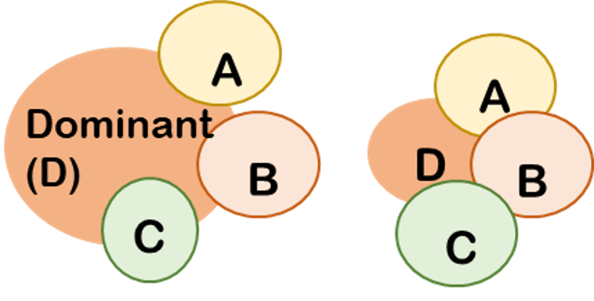

01
|
Large climate variability can be a strong environmental filter and allows species with certain traits to filter through. |
|---|
02
|
Highly variable environments would lead to an unstable competitive equilibrium and thus reduce dominance of any particular species or trait. |  |
|---|
03
|
Species distributed in the areas with larger climate variability have broader ranges of tolerance and associated trait values. |
|---|